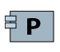

State Management
PhysicalComponent
DRACO - CENSSAT Differential Drag Experiment > DRACO - CENSSAT Differential Drag Experiment > Physical Architecture > Structure > CENSSAT/DRACO > State ManagementNo description.
Features
- Is Actor : false
- Is Human : false
- Is Abstract : false
Allocated Functions
Incoming Component Exchanges
| Exchange | Source | Description | Allocated Functional Exchanges | Allocated Exchange Items | Realized Component Exchanges | Realizing Component Exchanges |
|---|---|---|---|---|---|---|
|
Outgoing Component Exchanges
| Exchange | Target | Description | Allocated Functional Exchanges | Allocated Exchange Items | Realized Component Exchanges | Realizing Component Exchanges |
|---|---|---|---|---|---|---|
| ||||||
| ||||||
|